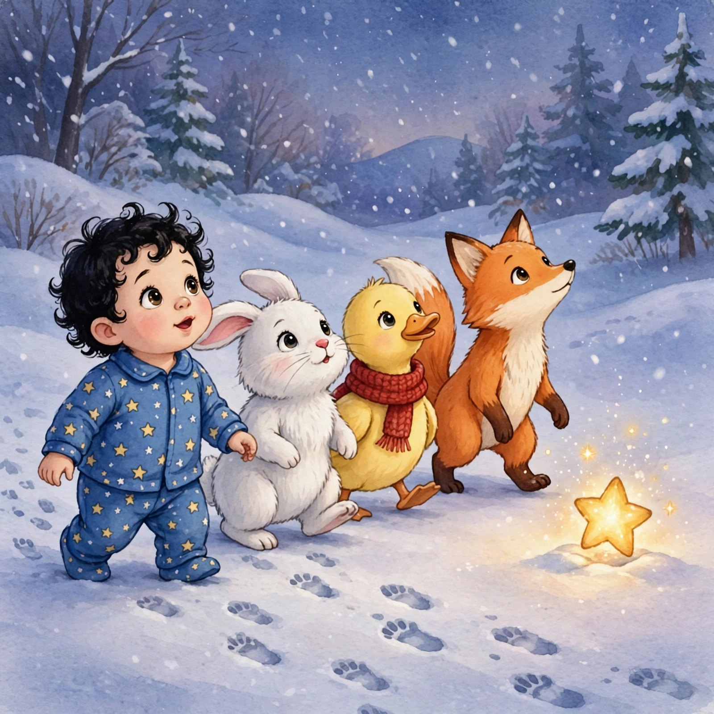
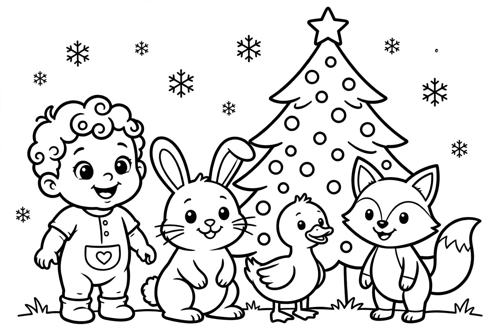

🗞️
Le Petit Journal d'Adam
Nº 1 — Vendredi 20 novembre 2026 · Gratuit · Pour les 0 à 6 ans et leurs familles

📋 Dans ce numéro :
- ⭐ L'histoire à suivre : La petite étoile perdue — chapitre 1
- 🎲 Jeux : cherche et trouve, mots mêlés, compte avec Adam
- 🎨 Le grand coloriage de Noël à imprimer
- 🏆 Concours : dessine la suite de l'histoire !
- 📚 Dernière page : toute la bibliothèque d'Adam
Le journal gratuit des petits lecteurs d'Adam et ses amis.
⭐ L'histoire à suivre
La petite étoile perdue
Chapitre 1 — Une lumière dans la neige

Ce soir-là, la neige tombe doucement sur le jardin d'Adam. Tout est blanc, tout est calme. Adam regarde par la fenêtre, en pyjama, une tasse de lait chaud à la main.
Soudain... une lumière dorée traverse le ciel ! Elle tourbillonne, elle descend, elle descend... et plouf ! Elle tombe dans la neige, juste derrière le grand sapin.
— Vous avez vu ? crie Adam. Vite, suivez-moi !
Adam met ses bottes et son manteau. Lapin arrive en sautillant. Canard met son beau foulard rouge. Et Renard, le plus rapide, court déjà devant.
Dans la neige, les amis suivent de petites lumières qui brillent comme des lucioles. Et là, sous le sapin... une petite étoile ! Elle tremble de froid. Ses points de lumière clignotent tout doucement.
— Je suis tombée du ciel, murmure l'étoile. Et maintenant, je ne sais plus voler...
Canard s'approche et lui prête son foulard rouge. — Tiens, ça va te réchauffer.
Adam regarde la grande colline, tout là-haut, près des nuages. Il sourit :
— Demain, on te rapportera tout là-haut, petite étoile. Près du ciel.
Mais la colline est grande... et la neige continue de tomber...
👉 Que va-t-il se passer ensuite ? Imagine la suite... et dessine-la pour le concours !
✏️ Activité d'éveil — Suis les empreintes
Sur la grande image, suis du doigt les empreintes de pas dans la neige, d'Adam jusqu'à la petite étoile. C'est un beau travail pour les petits doigts !
🎲 Les jeux du vendredi
🔎 Cherche et trouve
Regarde la grande image de la couverture et trouve : le lapin blanc 🐰, le canard jaune 🦆, le renard roux 🦊, le sapin de Noël 🎄 et la maison 🏠.
🔢 Compte avec Adam
⭐⭐⭐⭐⭐
étoiles = ______
❄️❄️❄️
flocons = ______
🎄🎄
sapins = ______
🔤 Mots mêlés de l'hiver
Trouve les 7 mots cachés dans la grille (de haut en bas ou de gauche à droite) :
NEIGE · ÉTOILE · SAPIN · LAPIN · NOËL · HIVER · ADAM
| S | O | U | L | N | M | E | A | P | L |
| A | N | E | L | E | E | R | N | S | P |
| P | O | I | O | I | O | L | P | N | M |
| I | P | P | E | G | U | P | I | T | M |
| N | E | L | L | E | I | S | R | N | P |
| M | T | T | A | L | P | O | H | N | A |
| L | O | A | P | O | R | N | I | O | A |
| E | I | L | I | U | M | O | V | E | D |
| L | L | P | N | S | R | P | E | L | A |
| S | E | I | N | I | L | M | R | T | M |
Réponses : SAPIN (colonne 1, de haut en bas), NEIGE (colonne 5, de haut en bas), ÉTOILE (colonne 2, à partir de la rangée 5), LAPIN (colonne 4, à partir de la rangée 5), HIVER (colonne 8, à partir de la rangée 6), NOËL (colonne 9, à partir de la rangée 6), ADAM (colonne 10, à partir de la rangée 7).
🌟 Le sais-tu ?
En hiver, l'air est souvent plus pur et le ciel plus clair : c'est le meilleur moment de l'année pour regarder les étoiles en famille, bien emmitouflés !
🎨 Le grand coloriage
Adam et ses amis devant le sapin de Noël — à toi de mettre les couleurs ! Imprime cette page et sors tes crayons.

🏆 Le concours du numéro
Dessine la suite de l'histoire ! À ton avis, comment Adam et ses amis vont-ils rapporter la petite étoile dans le ciel ? Dessine ton idée et envoie-la au Coin des artistes : les dessins choisis pourront paraître dans le journal et dans la galerie !
✍️ À toi d'écrire !
Tu as inventé une histoire ? Envoie-la-nous avec l'aide d'un parent : chaque histoire est lue avec soin par notre équipe, et les histoires choisies pourront paraître dans le journal, avec ton prénom et ton âge. À vos crayons, les petits auteurs !
📚 La bibliothèque d'Adam
Tous les livres de notre bibliothèque, à retrouver sur le site. Les livres gratuits se lisent en ligne, avec la narration audio !
👶 0 à 3 ans — Bébé Adam (gratuits)
- 🎨 Les couleurs de Bébé Adam — gratuit
- 🎄 Le premier Noël de Bébé Adam — gratuit
- 🌙 Bonne nuit, Bébé Adam — gratuit
- 🐮 Les animaux et leurs sons — gratuit
🧒 4 à 6 ans — Adam et ses amis
- ⭐ Adam et ses amis : L'étoile de Noël — gratuit
- 🎃 La citrouille courageuse — gratuit
- 🚀 Les aventures d'Adam et ses amis — PDF sur Etsy
- 👻 Adam et ses amis : Halloween — 6 histoires — PDF sur Etsy
- 🌱 Le jardin de la coopération — PDF sur Etsy
- 👂 Adam apprend à écouter — PDF sur Etsy et livre broché sur Amazon.ca
🎨 Coloriage
- 🎅 Coloriage de Noël — Adam et ses amis — PDF sur Etsy
- 🦁 Coloriage des animaux — Adam et ses amis — PDF sur Etsy
Merci de lire Le Petit Journal d'Adam ! 💛